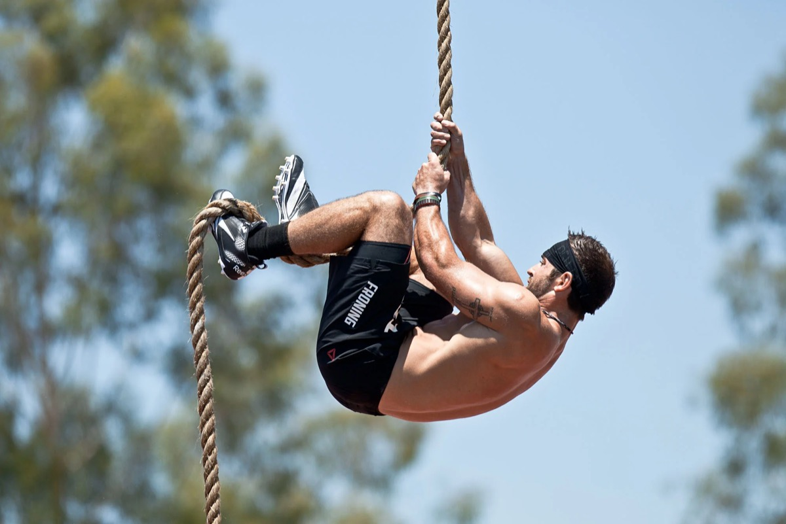

Quatre semaines pour apprivoiser la corde
21 septembre 2026
Depuis le 16 septembre et jusqu'au 14 octobre, le créneau skill du mercredi, de 17h30 à 18h30, est consacré à la montée de corde. Cinq séances sur le même mouvement, ce n'est pas un hasard : la corde, c'est le genre de skill qui ne se débloque pas en une séance de bonne volonté, mais qui cède très vite quand on y revient régulièrement avec la bonne méthode.
Et surtout, que tu n'aies jamais quitté le sol ou que tu enchaînes déjà les montées, tu as ta version du jour. C'est tout l'intérêt du format : un mouvement commun, trois niveaux de progression, et chacun travaille la marche juste au-dessus de celle qu'il maîtrise. Tu réserves le créneau comme un cours classique, sur Resawod.

Pourquoi la corde vaut le détour
C'est l'un des rares mouvements où tu déplaces tout ton corps à la seule force de tes bras et de ton gainage, sans matériel réglable pour t'aider. Résultat : une poigne qui prend cher (et qui progresse vite), des dorsaux et des biceps sollicités autrement qu'au pull-up, et un gainage obligé pour tenir la position quand les pieds quittent le sol.
C'est aussi un mouvement qui fait peur, et c'est normal : on est en l'air, les mains brûlent un peu, et tout le monde regarde. Une heure par semaine pendant un mois, c'est exactement ce qu'il faut pour que cette appréhension tombe et que la technique prenne le relais.
Les trois niveaux, et le tien
- Niveau 1, tu n'as jamais monté : on travaille la prise de corde au sol, le verrouillage des pieds (la fameuse pince, corde le long du mollet puis écrasée par l'autre pied), les tirages en position assise ou allongée, puis les toutes premières montées sur une ou deux prises, pieds jamais loin du sol.
- Niveau 2, tu montes mais ça coince : on nettoie le rythme bras et jambes, on gagne en hauteur, et on travaille surtout la descente, la partie que tout le monde néglige et qui coûte des brûlures et des chutes.
- Niveau 3, la montée est acquise : on augmente le volume (plusieurs montées d'affilée, avec du souffle dans le corps), on travaille la vitesse, puis l'ambition du cycle : la montée sans les jambes, avec les progressions qui y mènent.
Personne n'est coincé dans son niveau : si tu débloques ta première montée dès la deuxième séance, tu passes à la suite. C'est le coach qui t'oriente en début de séance, il suffit de lui dire où tu en es.
Trois conseils qui changent tout
- Des chaussettes hautes, ou un pantalon. La corde râpe les chevilles et les mollets, et une petite brûlure suffit à te dégoûter du mouvement pour deux semaines.
- Des mains sèches, sans magnésie en excès. Trop de magnésie glisse sur la corde, contrairement à la barre.
- On descend, on ne se laisse pas glisser. La descente se fait pied par pied, en contrôle. C'est là que se produisent la quasi-totalité des bobos, et c'est aussi ce qui fait progresser ta force.
Et si tu veux accélérer
Le facteur limitant, neuf fois sur dix, ce n'est pas la technique : c'est la poigne. Si tu lâches la corde avant que tes bras ne disent stop, va lire Des mains en acier pour ta gym, la routine complète y est. Et si tu veux du travail supplémentaire sur tes tirages, les 7 programmes skills restent disponibles pour tes créneaux Free.
Il reste trois mercredis. Si tu n'as pas encore essayé cette année, c'est le bon moment : réserve le créneau de 17h30, dis au coach où tu en es, et on voit jusqu'où tu montes d'ici le 14 octobre 💪
Jérémy